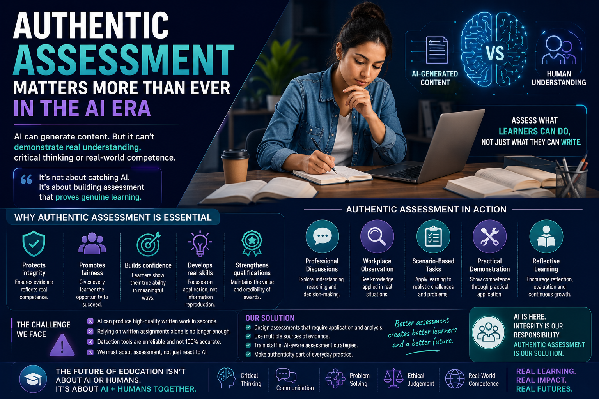

AI can generate content in seconds, but authentic assessment focuses on what learners genuinely understand, apply, explain, justify, and demonstrate in real-world situations.

Artificial Intelligence is rapidly transforming the educational landscape. Across schools, colleges, universities, and vocational training environments, learners now have instant access to AI-powered tools such as ChatGPT, Microsoft Copilot, and Gemini that can generate written content, explain concepts, summarise research, and support assignment preparation within seconds.
While these technologies offer significant opportunities for learning and accessibility, they are also forcing education providers to reconsider a critical question: how can organisations ensure that assessment evidence genuinely reflects learner understanding and competence?
This is precisely why authentic assessment matters more than ever in the AI era.
For many years, traditional assessment systems relied heavily on written coursework, assignments, and knowledge-based tasks. In most cases, these methods worked reasonably well because producing strong written work usually required learners to demonstrate understanding, research, structure, and effort.
However, generative AI has changed this environment dramatically.
Today, learners can generate professionally written responses with minimal subject knowledge. AI systems can structure essays, improve grammar, create technical explanations, summarise information, and even simulate academic writing styles.
This does not automatically mean learners are cheating. In many situations, AI may be used appropriately for:
The real issue is not simply whether AI has been used. The real issue is whether assessment methods still allow educators to verify genuine learner understanding, critical thinking, and applied competence.
Can the learner genuinely explain, apply, justify, reflect on, and demonstrate the knowledge they are presenting?
Authentic assessment focuses on evaluating how learners apply knowledge within realistic, practical, and meaningful situations rather than simply reproducing information.
Instead of assessing only what learners can write, authentic assessment explores whether learners can:
These approaches are significantly harder to fake using AI alone because they require reasoning, explanation, interaction, communication, and applied understanding.
Professional discussion is becoming especially valuable within AI-assisted learning environments. Through structured conversation, assessors can explore whether learners genuinely understand the content they submit.
Authentic assessment is especially important within vocational and competency-based education because qualifications must represent genuine capability rather than simply the ability to produce written content.
In sectors such as healthcare, transportation, cybersecurity, construction, engineering, and education, learners must demonstrate that they can apply knowledge safely, ethically, and effectively within real-world environments.
Consider a cybersecurity learner who submits an excellent written assignment discussing phishing attacks and network vulnerabilities. On paper, the work appears technically strong. However, during professional discussion the learner struggles to explain:
In this situation, the written assignment alone did not accurately reflect authentic understanding. The issue was not necessarily AI itself. The issue was relying too heavily on one assessment method without sufficient authenticity verification.
Assessment evidence is more likely to reflect genuine learner understanding and competence.
Learners can demonstrate skills through practical discussion, reflection, observation, and application.
ESOL learners and learners with additional needs may perform better through diverse assessment methods.
Qualifications maintain credibility when competence is verified through multiple evidence sources.
Assessment focuses on communication, judgement, reasoning, and real-world competence.
Educators increasingly design assessment around meaningful learning rather than information reproduction.
Authentic assessment therefore supports both integrity and inclusivity.
Educational systems are increasingly moving towards approaches that evaluate:
This does not mean written assignments no longer have value. Written work still remains useful when combined with broader evidence sources and appropriate authenticity verification methods.
The key issue is balance.
Educational providers that rely entirely on written evidence may increasingly struggle to maintain assessment validity within AI-enabled learning environments. In contrast, organisations that combine written assessment with discussion, observation, reflection, practical tasks, and scenario-based questioning are far more likely to maintain authentic educational standards.
The future of assessment is likely to combine AI-supported learning with strong human assessment, professional judgement, and authentic evidence verification.
Authentic assessment should become part of everyday educational practice rather than an occasional additional activity.
A vocational training provider delivering cybersecurity qualifications updates assessment practice by adding professional discussion and scenario-based questioning alongside written assignments. Learners must explain how security controls would operate within realistic organisational situations. IQAs sample the written evidence, assessor discussion records, and learner explanations to confirm authenticity and consistency.